Paper Title
Sliced Score Matching: A Scalable Approach to Density and Score Estimation
Yang Song, Sahaj Garg, Jiaxin Shi and Stefano Ermon
In Uncertainty in Artificial Intelligence (UAI), 2020
score matching
@inproceedings{song2020sliced,
title={Sliced score matching: A scalable approach to density and score estimation},
author={Song, Yang and Garg, Sahaj and Shi, Jiaxin and Ermon, Stefano},
booktitle={Uncertainty in Artificial Intelligence},
pages={574--584},
year={2020},
organization={PMLR}
}
title={Sliced score matching: A scalable approach to density and score estimation},
author={Song, Yang and Garg, Sahaj and Shi, Jiaxin and Ermon, Stefano},
booktitle={Uncertainty in Artificial Intelligence},
pages={574--584},
year={2020},
organization={PMLR}
}
TL;DR: This paper introduces sliced score matching, a new method to compute the score function by projecting the score onto random vectors.
1. Introduction
The general goal of score matching is the estimation of the probability distibution of the data. In other words, we hope to find the parameters of a model so the model distribution is close to the data distribution. The model respresents the parametrized probability distribution of the data, which we call model distribution.
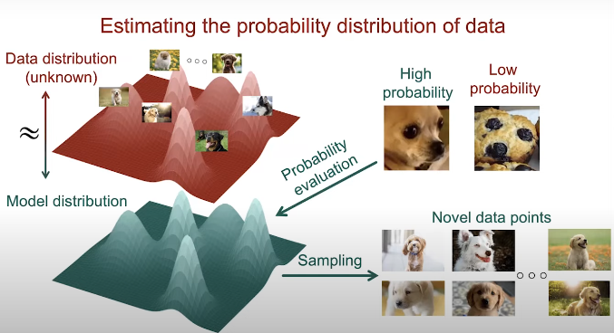
Our dataset contains \( N \) samples and \( \mathbf{x}_i \) is each data point in the dataset. From the all the models with probability distributions \( \Theta \) we want to find a single probability distribution \( \theta \in \Theta \) by minimizing the distance between \( p_{data} \) and \( p_\theta \), so then we can generate samples from \( p_\theta \) (Fig. 2).
Fig. 1. Generative modeling approach.
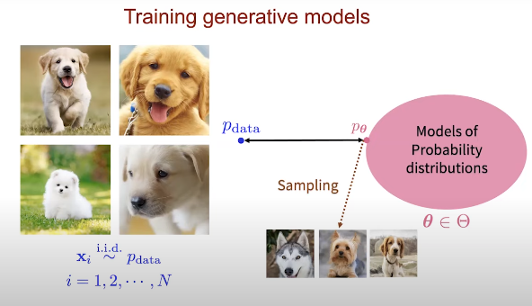
BUT the data distribution is very complex for high dimensional data.
We will start from a gaussian distribution which is a graph with 2 layers, the data points and a single unit, which is the density function of the probability distribution of such points.
Fig. 2. Generative modeling training.
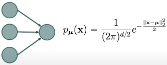
This distribution is too simple to model high dimensional data, so we need to add more layers and build a deeper computational graph or neural network to model the probability distribution \( p_\theta \), where \( \theta \) denotes the weights of the network.
Fig. 2. Graph of 2 layers.
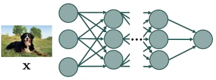
The first step is to convert the output \( f_\theta(x) \) to its exponential \( e^{f_\theta(x)} \) so the output becomes positive. Then, we can normalize the output by dividing it by a constant \( Z_\theta \) in order to construct the probability distribution \( \frac{e^{f_\theta(x)}}{Z_\theta} = p_\theta \).
Fig. 3. Deep graph.
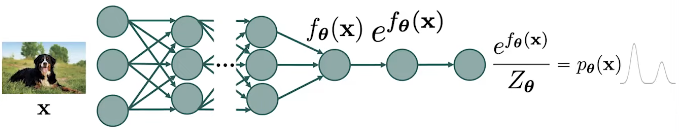
By definition, the normilizing constant \( Z\theta \) is be computed as follows:
\[
Z_\theta = \int{e^{f_{\theta}(x)}} \, dx,
\tag{Eq. 1} \label{eq:normalizing-constant}
\]
which, in gaussian distributions can be expressed as:
\[
Z_\mu = \frac{1}{(2\pi)^{d/2}},
\tag{Eq. 2} \label{eq:normalizing-constant-gaussian}
\]
However, when handling bigger and more complex distributions, this constant is intractable to compute. So, how to tackle the intractable normalizing constant?
Many approaches have been proposed but:
Fig. 4. Normalized graph.
- Energy-based models [Ackley 1995, LeCun 2006] \( \rightarrow \) Innacurate probability evaluation.
- Restricted neural network models \( \rightarrow \) Restricted model family:
- Autoregressive models [Bengio & Bengio 2000, van der Oord 2016]
- Normalizing flows [Rezende and Mohamed 2015], [Dinh 2014]
- Variational autoencoders [Kingma and Weilling 2014], [Rezende 2014].
- Generative adversarial networks (GANS) [Goodfellow 2014]
2. Score Functions Intuition
Suppose that we have a continuous probability distribution for which we represent \( p(\mathbf{x}) \) as the probability density function. We define the (Stein) score function as \( \nabla_x \text{log}p(x) \). So, what is the difference between the socre function and the density function? If we show a mixture of 2 gaussians as in Figure, the density function is the color coded, where darker color indicates higher density, and the score function is a vector field which gives us the direction where the density function grows quicklier.
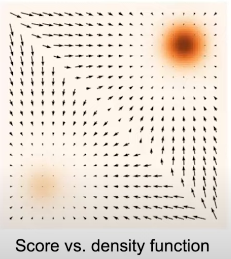
So, given the score function we can compute the density function with the integral, and reversily with the derivative, which means that all the information is preserved.
The models that work with the score function are called score-based generative models. Score-based models provide several advantages such as:
Fig. 5. Score function.
- Flexible models: since the score function does not need to be normalized.
- Improved generation: higher sample quality han GANS and provide controllability.
- Probability evaluation: the probability evaluation is more accurate and also the estimation of data probabilities.
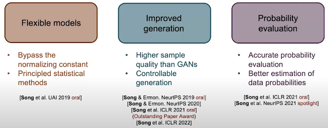
Fig. 6. Overview.
3. Score Function: Bypassing the normalizing constant
If we want to model the probability distribution using a normalized robability model, we need to ensure that the distribution we want to represent is fully normalized, which means that the are under the density function has to be 1. But we always need to deal with the normalizing constant.
In contrast, if we model the distribution through the score functions, there is no such noralization restriction because wwhen we compute the score function of the neural network, the score function becomes the difference between two terms which second term is the gradient of the normalizing constant which is equal to zero. So, the score function becomes the gradient of the deep neural network. Such gradients are easy to cumpute with automatic differenciation and backpropagation.
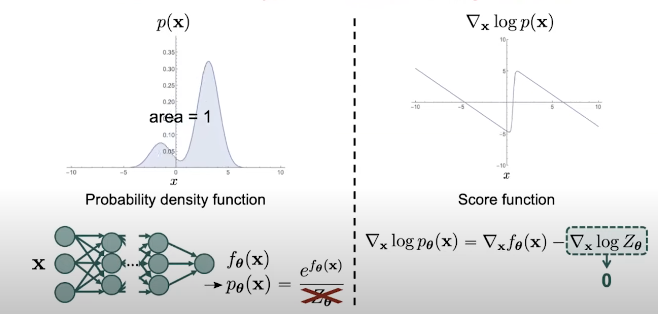
Supposing we have a dataset with points and the underlying density given by \( p_{data} \): \( \{ \mathbf{x}_1, \mathbf{x}_2, \dots, \mathbf{x}_N \} \overset{\text{i.i.d.}}{\sim} p_{\text{data}}(\mathbf{x}) \), we can train a statistical model to obtain the underlying density function \( p_\theta(\mathbf{x}) \approx p_{data}(\mathbf{x}) \) using methods such as maximum likelihood.
If we work with score funtions, we want to develop a similar approach tthat can allow us to train a score model to estimate the underlying score function from a limited set of training data points.
We can formulate this problem as score estimation:
Fig. 7. Score function vs probability density function.
- Given: \( \{ \mathbf{x}_1, \mathbf{x}_2, \dots, \mathbf{x}_N \} \overset{\text{i.i.d.}}{\sim} p_{\text{data}}(\mathbf{x}) \)
- Goal: \( \nabla_x \text{log} p_{data}(\mathbf{x}) \)
- Score model (assumed to be a neural network): \( s_\theta : \mathbb{R}^d \rightarrow \mathbb{R}^d \approx \nabla_x \text{log} p_{data}(\mathbf{x}) \). It maps the deep dimensional input to a deep dimensional output. We want to train thie score model so it approximates the ground truth score function of the data distribution \( \nabla_x \text{log} p_{data}(\mathbf{x}) \).
- Objective: How to train such model? By comparing two vector fields of scores:
- Prediction (by our score model): \( s_\theta(\mathbf{x}) \).
- Ground truth: \( \nabla_x \text{log} p_{data}(\mathbf{x}) \).
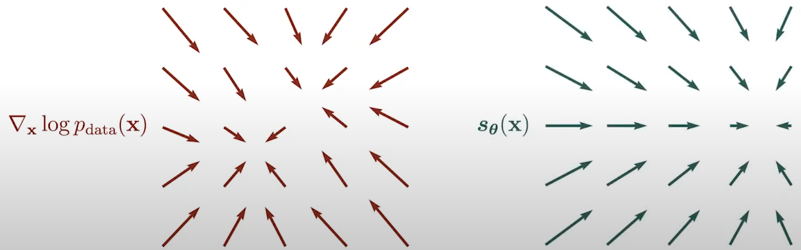
Fig. 8. Vector fields.
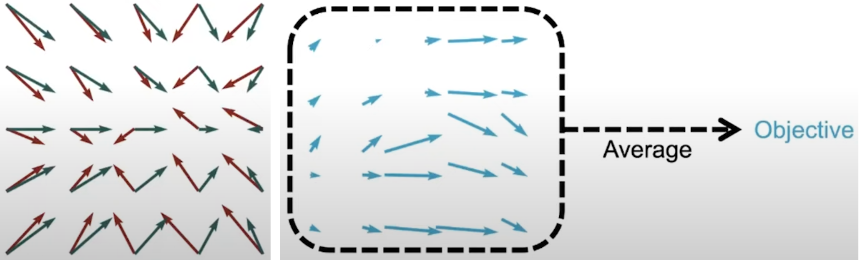
Mathematically, this calculation can be done with Fisher divergence:
\[
\frac{1}{2} \mathbb{E}_{p_{\text{data}}(\mathbf{x})} \left[ \left\| \nabla \log p_{\text{data}}(\mathbf{x}) - s_\theta(\mathbf{x}) \right\|^2_2 \right]
\tag{Eq. 3} \label{eq:fisher-divergence}
\]
However, we cannot compute directly Fishe's divergence because we do not know the ground truth value of the data score function. Therefore, we will set the objective with Score Matching [Hyvärinen 2005]:
\[
\mathbb{E}_{p_{\text{data}}(\mathbf{x})} \left[ \frac{1}{2} \left\| s_\theta(\mathbf{x}) \right\|^2_2 + \text{trace}(\nabla_x s_\theta(\mathbf{x})) \right],
\tag{Eq. 4} \label{eq:score-matching}
\]
where:
Fig. 9. Vector field differences that form an objective to optimize.
- \( \nabla_x s_\theta(\mathbf{x}) \) is the Jacobian of \( s_\theta(\mathbf{x}) \).
Let's suppose our score is parametrized by a deep neural network which we cal deep score models. In order to compute the score matching, we need to compute two terms, one is the squared Euclidean norm of the score model output \( \left\| s_\theta(\mathbf{x_i}) \right\|^2_2 \) and the second term is the trace of the Jacobian of the score model \( \text{trace}(\nabla_x s_\theta(\mathbf{x_i})) \). The first term is easy to compute through forward propagation and them computing the L2 norm of the obtained \( s_\theta(\mathbf{x}) \). The second term is more difficult to compute since we need to forward propagate to obtain the first element and then we need to backpropagate to compute the first element on the diagonal of the Jacobian \( \frac{\partial s_\theta^1}{\partial x_1} \): \[ J = \nabla_x s_\theta(\mathbf{x}) = \begin{bmatrix} \frac{\partial s_\theta^1}{\partial x_1} & \frac{\partial s_\theta^1}{\partial x_2} & \cdots & \frac{\partial s_\theta^1}{\partial x_d} \\ \frac{\partial s_\theta^2}{\partial x_1} & \frac{\partial s_\theta^2}{\partial x_2} & \cdots & \frac{\partial s_\theta^2}{\partial x_d} \\ \vdots & \vdots & \ddots & \vdots \\ \frac{\partial s_\theta^N}{\partial x_1} & \frac{\partial s_\theta^N}{\partial x_2} & \cdots & \frac{\partial s_\theta^N}{\partial x_d} \end{bmatrix}. \tag{Eq. 6} \label{eq:jacobian} \] This process needs to be repeated multiple times until we have recovered all diagonal elements and then we can sum over all the diagonal elements to get the trace (Fig. 10):

Fig. 10. Jacobian computation.
4. Sliced Score Matching
Intuition: one dimensional problems should be easier to compute, so how can we convert a high-dimensional problem into a one-dimensional problem?
Idea: By leveraging random projecctions. Projecting high-dimensional vector fields to run directions, will allow us to get one-dimensional scalar fields.
Suppose that we have the following high-dimensional vectors in Fig. 11:
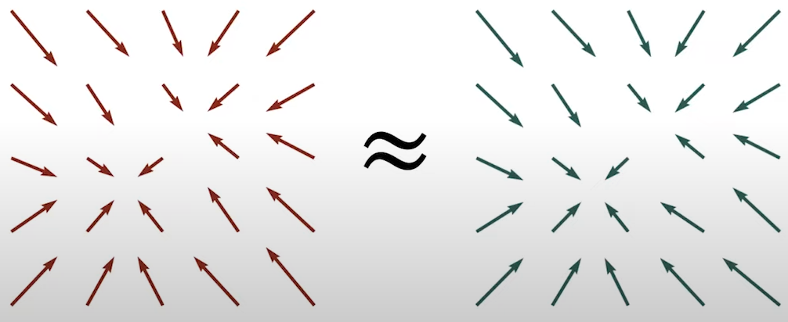
we can project these vectors onto a random direction \( \mathbf{v} \) to get the one-dimensional scalar fields in Fig. 12:
Fig. 11. High-dimensional vectors.
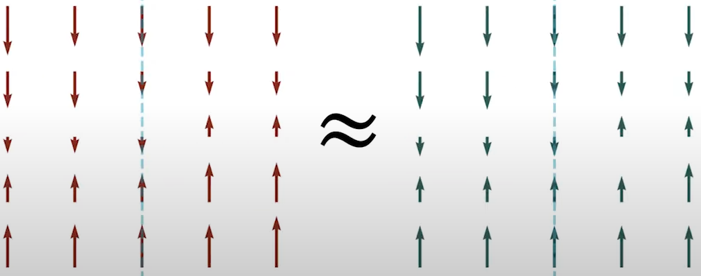
This intuition can be captured with the concept of sliced Fisher divergence:
\[
\frac{1}{2} \mathbb{E}_{p_v} \mathbb{E}_{p_{\text{data}}(\mathbf{x})} \left[ ( \mathbf{v}^\text{T} \nabla_x \log p_{\text{data}}(\mathbf{x}) - \mathbf{v}^\text{T}s_\theta(\mathbf{x}) )^2 \right],
\tag{Eq. 7} \label{eq:sliced-fisher-divergence}
\]
where:
Fig. 12. One-dimensional scalar fields.
- \( p_v \) is the distribution of the random direction \( \mathbf{v} \).
- \( \mathbf{v}^\text{T} \nabla_x \log p_{\text{data}}(\mathbf{x}) \) is the projection of the ground truth score function onto the random direction \( \mathbf{v} \).
- \( \mathbf{v}^\text{T}s_\theta(\mathbf{x}) \) is the projection of the score model onto the random direction \( \mathbf{v} \).
- denotes the distribution of those projection directions.
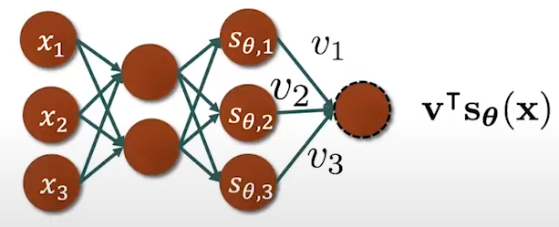
Next, we can compute the gradient \( \nabla_x (\mathbf{v}^\text{T} s_\theta(\mathbf{x})) \) by doing only one backpropagation, and at the end, compute the inner prodect of \( \mathbf{v}^\text{T} \) and the gradient (Fig. 14)
Fig. 13. Trace \( \mathbf{v}^\text{T} \nabla_x s_\theta(\mathbf{x}) \mathbf{v} \) computation.
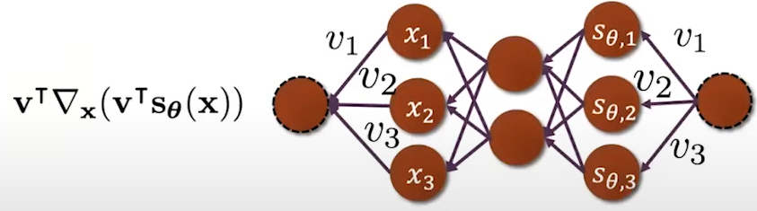
In summary, we only need one step backpropagation compared to the multiple backpropagation steps in vanilla score matching.
Fig. 14. Trace \( \mathbf{v}^\text{T} \nabla_x s_\theta(\mathbf{x}) \mathbf{v} \) backpropagation.
In practice, we can summarize sliced score matching as:
- Sample a minibatch of datapoints from our dataset \( \{ \mathbf{x}_1, \mathbf{x}_2, \dots, \mathbf{x}_n \} \overset{}{\sim} p_{\text{data}}(\mathbf{x}) \).
- Sample a minibatch of projection directions \( \{ \mathbf{v}_1, \mathbf{v}_2, \dots, \mathbf{v}n \} \overset{}{\sim} p_n \) (for each datapoint, sample one single direction from the distribution \( p_v \) ).
- Estimate the sliced score matching loss with emirical means: \[ \frac{1}{n} \sum_{i=1}^n \left[ \mathbf{v}^\text{T} \nabla_x s_\theta(\mathbf{x_i}) \mathbf{v_i} + \frac{1}{2} (\mathbf{v_i}^\text{T}s_\theta(\mathbf{x_i}) )^2 \right]. \tag{Eq. 10} \label{eq:sliced-score-matching-loss} \]
- The projection distribution is typically Gaussian or Rademacher.
- Stochastic gradient descend → minimaze the empirical objective for sliced score matching.
5. Alternatives to Sliced Score Matching: Previous works
5.1 Denoising Score Matching [Vincent 2011]
There is an alternative to bypass the computational challenge of vanilla score matching with denoising score matching.Denoising score matching takes its name from the procedure to solve score matching scalability. It consists of adding noise to the data point to help us computing the trace of the Jacobian term. To peform denoising score matching we need to define a perturbation kernel denoted as \( q_\sigma \).
Being \( \mathbf{x} \) a noise-free datapoint, \( \mathbf{\tilde{x}} \) a perturbed data point and \( \sigma \) a gaussian distribution (typically), we convolve the perturbation kernel with the original data distribution \( p_{\text{data}}(\mathbf{x}) \), to get a noisy data distribution \( q_\sigma (\mathbf{\tilde{x}}) \). The key idea behind denoising score matching is to estimate the scope function of the noise data density instead of the score function of the original data density. \[ \frac{1}{2} \mathbb{E}_{q_\sigma(\mathbf{\tilde{x}})} \left[ \left\| \nabla_\mathbf{\tilde{x}} \log p_\sigma(\mathbf{\tilde{x}}) - s_\theta(\mathbf{\tilde{x}}) \right\|^2_2 \right]. \tag{Eq. 11} \label{eq:denoising-score-matching} \] When estimating the score function of the noisy data distribution, the equivalent form obtained sfter aritmetic deviation which is the objective of denoising score matching is: \[ \frac{1}{2} \mathbb{E}_{p_{\text{data}(\mathbf{x})}} \mathbb{E}_{q_\sigma (\mathbf{\tilde{x} \vert \mathbf{x}}}) \left[ \left\| \nabla_\mathbf{\tilde{x}} \log p_\sigma(\mathbf{\tilde{x}} \vert \mathbf{x}) - s_\theta(\mathbf{\tilde{x}}) \right\|^2_2 \right]. \tag{Eq. 12} \label{eq:denoising-score-matching-objective} \] The gradient of the perturbation kernel $\nabla_\mathbf{\tilde{x}} \log p_\sigma(\mathbf{\tilde{x}} \vert \mathbf{x})$ is scalable and fully tractable because we usually define the perturbation kernel by hand.
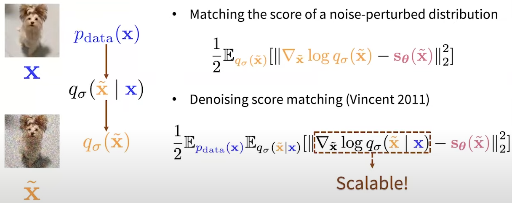
The tradeoff of denoising score matching is that, since it requires adding noise to datapoints, it cannot estimate the scores of the noise-free distributions. When are trying to lower the magnitude of the noise, the variance becomes bigger and bigger and eventually explodes. Therefore, it is not to use denoising score matching for noise-free score estimation.
Fig. 15. Score matching objectives.
Applying first the definition of expectation in continuous probability and then expandinf the square of the norm \( \| \mathbf{a} - \mathbf{b} \|_2^2 = \| \mathbf{a} \|_2^2 + \| \mathbf{b} \|_2^2 - 2 \mathbf{a}^\top \mathbf{b} \), we can derive the objective: \[ \begin{align} \frac{1}{2} \mathbb{E}_{\tilde{\mathbf{x}} \sim q_\sigma} \left[ \left\| \nabla_{\tilde{\mathbf{x}}} \log q_\sigma(\tilde{\mathbf{x}}) - s_\theta(\tilde{\mathbf{x}}) \right\|_2^2 \right] &= \tag{Eq. 13.1} \\ &= \frac{1}{2} \int q_\sigma(\tilde{\mathbf{x}}) \left\| \nabla_{\tilde{\mathbf{x}}} \log q_\sigma(\tilde{\mathbf{x}}) - s_\theta(\tilde{\mathbf{x}}) \right\|_2^2 d\tilde{\mathbf{x}} \tag{Eq. 13.2} \\ &= \frac{1}{2} \int q_\sigma(\tilde{\mathbf{x}}) \left\| \nabla_{\tilde{\mathbf{x}}} \log q_\sigma(\tilde{\mathbf{x}}) \right\|_2^2 d\tilde{\mathbf{x}} + \frac{1}{2} \int q_\sigma(\tilde{\mathbf{x}}) \left\| s_\theta(\tilde{\mathbf{x}}) \right\|_2^2 d\tilde{\mathbf{x}} - \int q_\sigma(\tilde{\mathbf{x}}) \nabla_{\tilde{\mathbf{x}}} \log q_\sigma(\tilde{\mathbf{x}})^\top s_\theta(\tilde{\mathbf{x}}) d\tilde{\mathbf{x}}. \tag{Eq. 13.3} \end{align} \label{eq:denoising-score-matching-objective-expanded} \] where we can write the third term as an expectation: \[ \begin{align} - \int q_\sigma(\tilde{\mathbf{x}}) \nabla_{\tilde{\mathbf{x}}} \log q_\sigma(\tilde{\mathbf{x}})^\top \mathbf{s}_\theta(\tilde{\mathbf{x}}) \, d\tilde{\mathbf{x}} \tag{Eq. 14.1} \\ &= - \int \nabla_{\tilde{\mathbf{x}}} q_\sigma(\tilde{\mathbf{x}})^\top \mathbf{s}_\theta(\tilde{\mathbf{x}}) \, d\tilde{\mathbf{x}} \tag{Eq. 14.2} \\ &= - \int \nabla_{\tilde{\mathbf{x}}} \left( \int p_\text{data}(\mathbf{x}) q_\sigma(\tilde{\mathbf{x}} | \mathbf{x}) \, d\mathbf{x} \right)^\top \mathbf{s}_\theta(\tilde{\mathbf{x}}) \, d\tilde{\mathbf{x}} \tag{Eq. 14.3} \\ &= - \int \nabla_{\tilde{\mathbf{x}}} \left( \int p_\text{data}(\mathbf{x}) q_\sigma(\tilde{\mathbf{x}} | \mathbf{x}) \, d\mathbf{x} \right)^\top \mathbf{s}_\theta(\tilde{\mathbf{x}}) \, d\tilde{\mathbf{x}} \tag{Eq. 14.4} \\ &= - \int \left( \int p_\text{data}(\mathbf{x}) \nabla_{\tilde{\mathbf{x}}} q_\sigma(\tilde{\mathbf{x}} | \mathbf{x}) \, d\mathbf{x} \right)^\top \mathbf{s}_\theta(\tilde{\mathbf{x}}) \, d\tilde{\mathbf{x}} \tag{Eq. 14.5} \\ &= - \int \left( \int p_\text{data}(\mathbf{x}) \nabla_{\tilde{\mathbf{x}}} q_\sigma(\tilde{\mathbf{x}} | \mathbf{x}) \, d\mathbf{x} \right)^\top \mathbf{s}_\theta(\tilde{\mathbf{x}}) \, d\tilde{\mathbf{x}} \tag{Eq. 14.6} \\ &= - \int \left( \int p_\text{data}(\mathbf{x}) q_\sigma(\tilde{\mathbf{x}} | \mathbf{x}) \nabla_{\tilde{\mathbf{x}}} \log q_\sigma(\tilde{\mathbf{x}} | \mathbf{x}) \, d\mathbf{x} \right)^\top \mathbf{s}_\theta(\tilde{\mathbf{x}}) \, d\tilde{\mathbf{x}} \tag{Eq. 14.7} \\ &= - \int \left( \int p_\text{data}(\mathbf{x}) q_\sigma(\tilde{\mathbf{x}} | \mathbf{x}) \nabla_{\tilde{\mathbf{x}}} \log q_\sigma(\tilde{\mathbf{x}} | \mathbf{x}) \, d\mathbf{x} \right)^\top \mathbf{s}_\theta(\tilde{\mathbf{x}}) \, d\tilde{\mathbf{x}} \tag{Eq. 14.8} \\ &= - \int \int p_\text{data}(\mathbf{x}) q_\sigma(\tilde{\mathbf{x}} | \mathbf{x}) \nabla_{\tilde{\mathbf{x}}} \log q_\sigma(\tilde{\mathbf{x}} | \mathbf{x})^\top \mathbf{s}_\theta(\tilde{\mathbf{x}}) \, d\mathbf{x} \, d\tilde{\mathbf{x}} \tag{Eq. 14.9} \\ &= - \int \int p_\text{data}(\mathbf{x}) q_\sigma(\tilde{\mathbf{x}} | \mathbf{x}) \nabla_{\tilde{\mathbf{x}}} \log q_\sigma(\tilde{\mathbf{x}} | \mathbf{x})^\top \mathbf{s}_\theta(\tilde{\mathbf{x}}) \, d\mathbf{x} \, d\tilde{\mathbf{x}} \tag{Eq. 14.10} \\ &= - \mathbb{E}_{\mathbf{x} \sim p_\text{data}(\mathbf{x}), \tilde{\mathbf{x}} \sim q_\sigma(\tilde{\mathbf{x}} | \mathbf{x})} \left[ \nabla_{\tilde{\mathbf{x}}} \log q_\sigma(\tilde{\mathbf{x}} | \mathbf{x})^\top \mathbf{s}_\theta(\tilde{\mathbf{x}}) \right] \tag{Eq. 14.11} \\ \end{align} \] with this derivation, we can rewrite Eq. 13.1. as: \[ \begin{align} \frac{1}{2} \mathbb{E}_{\tilde{\mathbf{x}} \sim q_\sigma} \left[ \left\| \nabla_{\tilde{\mathbf{x}}} \log q_\sigma(\tilde{\mathbf{x}}) - s_\theta(\tilde{\mathbf{x}}) \right\|_2^2 \right] \tag{Eq. 15.1} \\ &= \text{const.} + \frac{1}{2} \mathbb{E}_{\tilde{\mathbf{x}} \sim q_\sigma} \left[ \| \mathbf{s}_\theta(\tilde{\mathbf{x}}) \|_2^2 \right] - \int q_\sigma(\tilde{\mathbf{x}}) \nabla_{\tilde{\mathbf{x}}} \log q_\sigma(\tilde{\mathbf{x}})^\top \mathbf{s}_\theta(\tilde{\mathbf{x}}) \, d\tilde{\mathbf{x}} \tag{Eq. 15.2} \\ &= \text{const.} + \frac{1}{2} \mathbb{E}_{\tilde{\mathbf{x}} \sim q_\sigma} \left[ \| \mathbf{s}_\theta(\tilde{\mathbf{x}}) \|_2^2 \right] - \mathbb{E}_{\mathbf{x} \sim p_\text{data}(\mathbf{x}), \tilde{\mathbf{x}} \sim q_\sigma(\tilde{\mathbf{x}} | \mathbf{x})} \left[ \nabla_{\tilde{\mathbf{x}}} \log q_\sigma(\tilde{\mathbf{x}} | \mathbf{x})^\top \mathbf{s}_\theta(\tilde{\mathbf{x}}) \right] \tag{Eq. 15.3} \\ \end{align} \] Introducing Squared Norm for the Gradient Term (3rd term) we get: \[ \begin{align} = \text{const.} + \frac{1}{2} \mathbb{E}_{\mathbf{x} \sim p_\text{data}(\mathbf{x}), \tilde{\mathbf{x}} \sim q_\sigma(\tilde{\mathbf{x}} | \mathbf{x})} \left[ \| \mathbf{s}_\theta(\tilde{\mathbf{x}}) \|_2^2 \right] - \frac{1}{2} \mathbb{E}_{\mathbf{x} \sim p_\text{data}(\mathbf{x}), \tilde{\mathbf{x}} \sim q_\sigma(\tilde{\mathbf{x}} | \mathbf{x})} \left[ \| \nabla_{\tilde{\mathbf{x}}} \log q_\sigma(\tilde{\mathbf{x}} | \mathbf{x}) \|_2^2 \right] \tag{Eq. 16.1} \\ = \text{const.} + \frac{1}{2} \mathbb{E}_{\mathbf{x} \sim p_\text{data}(\mathbf{x}), \tilde{\mathbf{x}} \sim q_\sigma(\tilde{\mathbf{x}} | \mathbf{x})} \left[ \| \mathbf{s}_\theta(\tilde{\mathbf{x}}) - \nabla_{\tilde{\mathbf{x}}} \log q_\sigma(\tilde{\mathbf{x}} | \mathbf{x}) \|_2^2 \right] + \text{const.} \tag{Eq. 16.2} \\ = \frac{1}{2} \mathbb{E}_{\mathbf{x} \sim p_\text{data}(\mathbf{x}), \tilde{\mathbf{x}} \sim q_\sigma(\tilde{\mathbf{x}} | \mathbf{x})} \left[ \| \mathbf{s}_\theta(\tilde{\mathbf{x}}) - \nabla_{\tilde{\mathbf{x}}} \log q_\sigma(\tilde{\mathbf{x}} | \mathbf{x}) \|_2^2 \right] + \text{const.} \tag{Eq. 16.3} \\ \end{align} \] As a conclusion, denoising score matching can be summarize as:
- Sample a minibatch of datapoints: \( \{ \mathbf{x}_1, \mathbf{x}_2, \dots, \mathbf{x}_N \} \sim p_{\text{data}}(\mathbf{x}) \)
- Sample a minibatch of perturbed datapoints: \( \{ \mathbf{\tilde{x}}_1, \mathbf{\tilde{x}}_2, \dots, \mathbf{\tilde{x}}n \} \overset{} {\sim} q_\sigma(\mathbf{\tilde{x}}) \) with \( \mathbf{\tilde{x}}_i \sim q_\sigma (\mathbf{\tilde{x}}_i \vert \mathbf{x}) \)
- Estimate the denoising score matching loss with empirical means: \[ = \frac{1}{2n} \sum_{i=1}^n \left[ \| \mathbf{s}_\theta(\tilde{\mathbf{x_i}}) - \nabla_{\tilde{\mathbf{x}}} \log q_\sigma(\tilde{\mathbf{x_i}} | \mathbf{x_i}) \|_2^2 \right]. \tag{Eq. 17} \label{eq:denoising-score-matching-loss} \] In the special case of a Gaussian perturbation: \[ = \frac{1}{2n} \sum_{i=1}^n \left[ \left| \left| \mathbf{s}_\theta(\tilde{\mathbf{x_i}}) - \frac{\tilde{\mathbf{x_i}} - \mathbf{x_i}}{\sigma^2} \right|\right|_2^2 \right]. \tag{Eq. 18} \label{eq:gaussian-perturbation} \]
- Stochastic gradient descent.
- Choose a very small \( \sigma \) (be careful because the variance can explode).
© Copyright © All rights reserved | Carlos Hernández Oliván | Colorlib